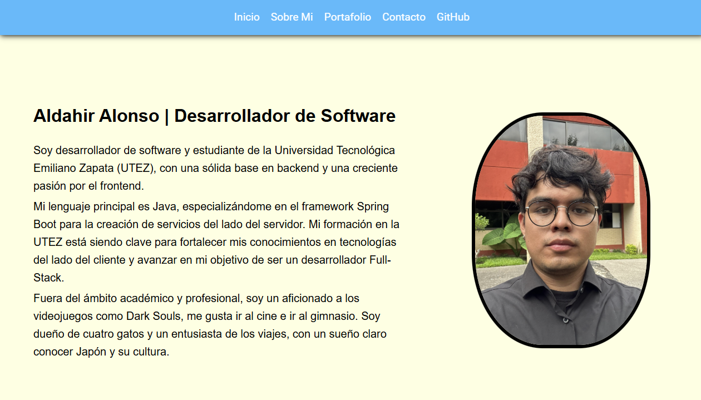

Mis Proyectos
En esta sección podrás encontrar proyectos increibles que he creado o donde he colaborado.
Hay muchos proyectos increibles que estan siendo desarrollados con mucho ❤️.

Proyecto: Portafolio.
Portafolio personal para demostrar mis habilidades en HTML, CSS, JavaScript y PHP.
Proyecto: Natural's Chef Cuernavaca.
Pagina de ventas para un negocio de Cuernavaca que se dedica a la venta de alimento para perros usando HTML, TailwindCSS y JavaScript.
Proyecto: CinePlay.
Sistema gestor de peliculas hecho con Java y el famoso framework Spring Boot, usando bases de datos Postgresql desde un contenedor en Docker.
Proyecto: SuperMarket.
Sistema para administrar un supermercado hecho con Spring Boot, con bases de datos Postgresql.